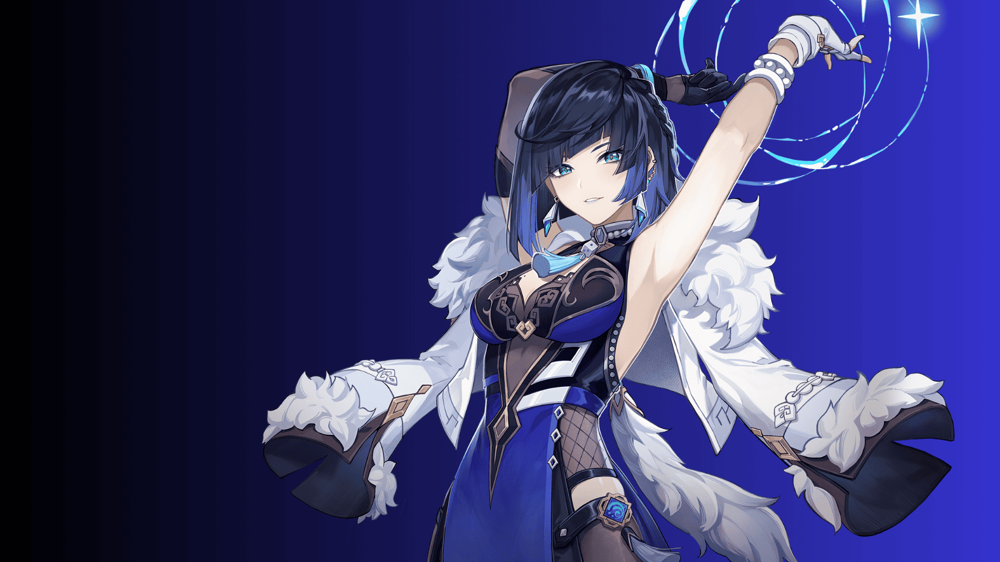
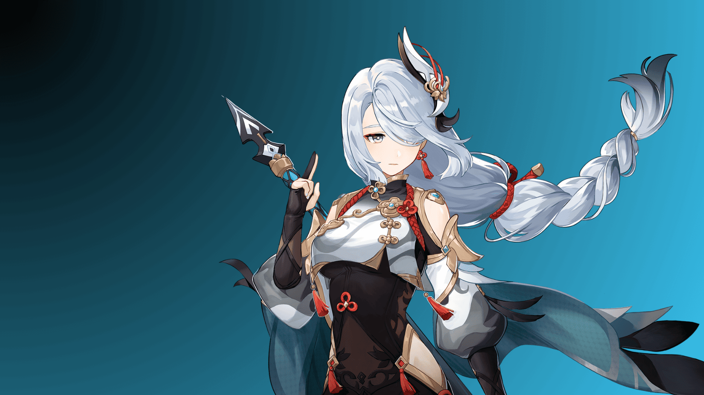
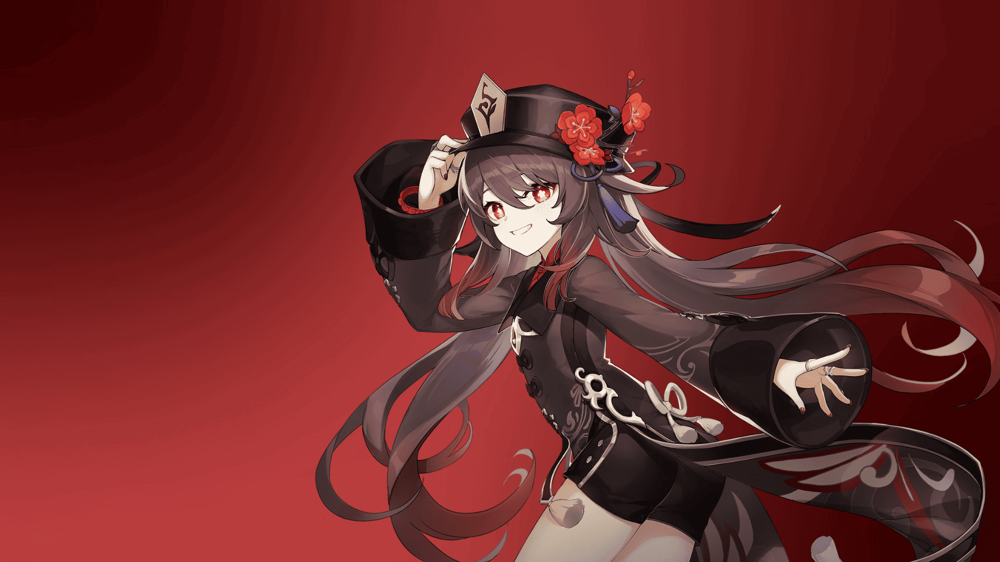
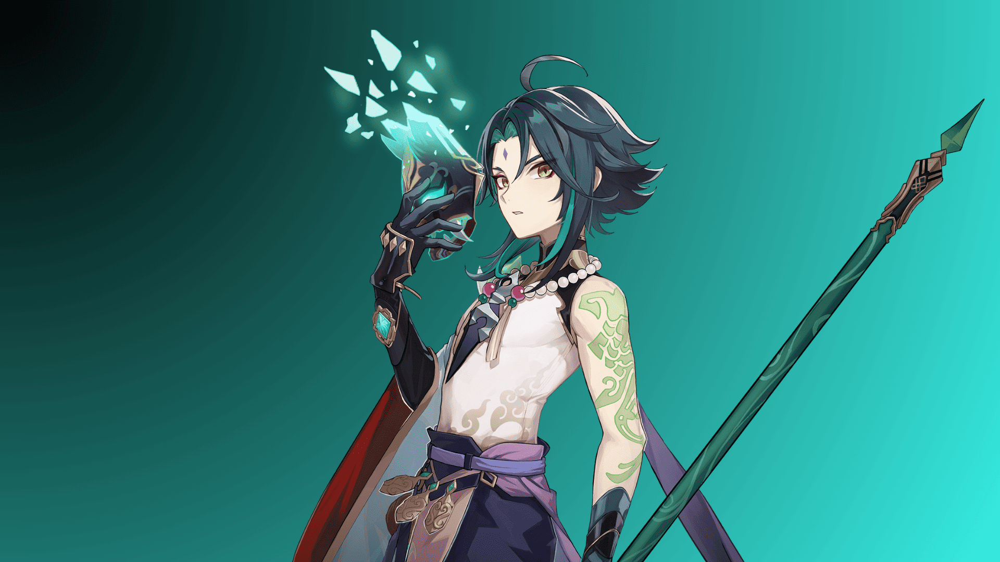
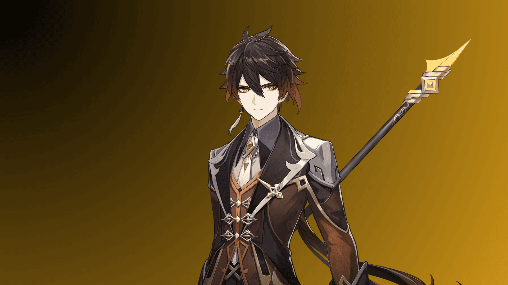
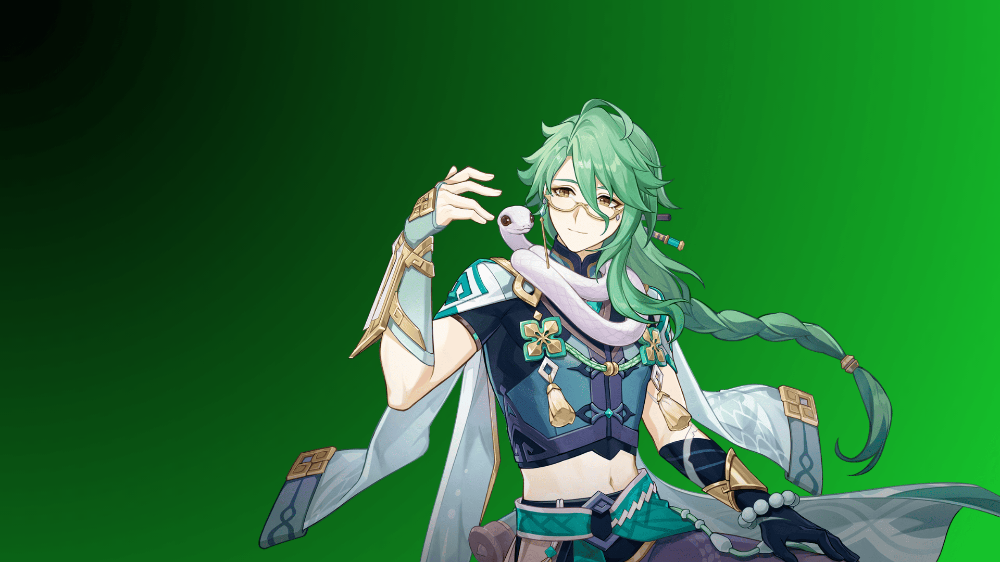

Bow / Liyue / 5-Star / CRIT Rate / hydro
Genshin Impact
Yelan
A mysterious person who claims to work for the Ministry of Civil Affairs, but is a "non-entity" on the Ministry of Civil Affairs' list.
More details »


Polearm / Liyue / 5-Star / ATK / Cryo
Genshin Impact
Shenhe
An adepti disciple with a most unusual air about her.
Having spent much time cultivating in isolation in Liyue's mountains,
she has become every bit as cool and distant as the adepti themselves.
More details »


Polearm / Liyue / 5-Star / CRIT DMG / Pyro
Genshin Impact
Hutao
The 77th Director of the Wangsheng Funeral Parlor.
She took over the business at a rather young age.
More details »


Polearm / Liyue / 5-Star / Crit Rate / anemo
Genshin Impact
Xiao
A yaksha adeptus who defends Liyue. Also heralded as the "Conqueror of Demons" and "Vigilant Yaksha."
More details »


Polearm / Liyue / 5-Star / Geo DMG Bonus / Geo
Genshin Impact
Zhongli
A mysterious expert contracted by the Wangsheng Funeral Parlor. Extremely knowledgeable in all things.
More details »


Catalyst / Liyue / 5-Star / HP / Dendro
Genshin Impact
Baizhu
The owner of Bubu Pharmacy, who is rarely seen without the white snake named Changsheng.
His medicinal knowledge is encyclopedic, and his personal intrigues subtle.
More details »
Yelan
"Oh you'd like to how know more about me?"
Shenhe
"I am but a mortal living in the mountains"
Hutao
"One client, two clients, three clients!"
Xiao
"Reduced to just standing around... How absurd."
Zhongli
"Every journey has its final day. Don't rush."
Baizhu
"Life, death... and the world around us all follow a set of laws..."